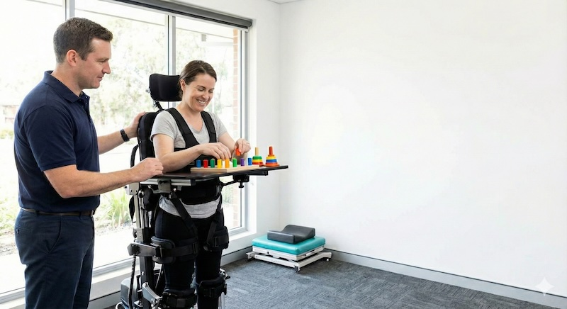
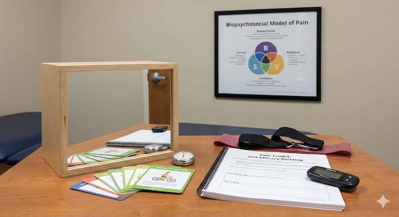
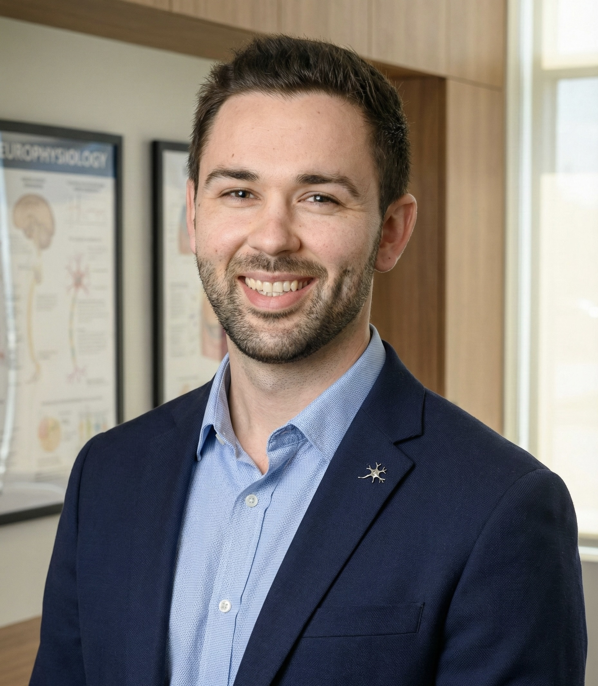

Neurological and progressive conditions
Stroke, MND, ABI, TBI, spinal cord injury and progressive neurological change.
Western Sydney and The Hills District
Home and community-based physiotherapy for neurological, respiratory and complex disability needs. Suitable referrals may include NDIS, iCare/LTCS, DVA, Home Care Package, workers compensation and private clients.
Send a referral, check common suitability indicators, or call before submitting details.
A quick guide to the referral types most likely to suit this mobile service.
Stroke, MND, ABI, TBI, spinal cord injury and progressive neurological change.
Clients whose therapy needs to consider routines, positioning, support needs and risk.
Walking, transfer safety, access barriers and equipment progression in the usual environment.
Changing capacity, pacing, carer education or support-worker routines needing coordinated input.
Practical recommendations and clinically reasoned documentation where appropriate.
Support for neurological disability, progressive conditions, respiratory decline, mobility change and complex care needs.
Reports and letters that link impairments, functional limitations, risk and therapy recommendations in language funding teams can understand.
Therapy delivered in the environments where mobility, transfers, positioning, fatigue and carer support actually occur.
Consistent updates for families, support coordinators, case managers and broader care teams when consent is in place.
Core physiotherapy services available after suitability, consent and funding pathways are clarified.
Home and community-based therapy for complex neurological presentations.
Respiratory support for clients with neurological or complex disability needs.

Long-term therapy planning for clients with high support needs.

A practical, person-centred approach to pain, pacing and function.
This section is about the people and teams Tandem Physio commonly works with, not a complete eligibility list.
Home and community visits help therapy consider real-world mobility, transfers, fatigue, access barriers, routines, equipment and support-worker needs.
Where appropriate, recommendations are documented so families, support coordinators, case managers and treating teams can understand the clinical reasoning.
Led by Chris Burgess, Principal Physiotherapist.

Chris leads Tandem Physio with a focus on neurological complexity, functional rehabilitation and clear clinical reasoning. His approach combines practical therapy, rapport-building and careful communication with the people involved in a client’s care.
Tandem Physio aims to provide reliable, ethical and compassionate care with clear boundaries, transparent communication and careful documentation.
Tandem Physio aims to make complex referrals easier to triage and coordinate. Helpful starting details include suburb, funding pathway, reason for referral, urgency, current functional concerns and whether reports, training or equipment input may be needed.
Location, funding type, goals, recent changes, risks and preferred contact details help triage the referral.
With consent, updates can be shared with relevant family members, coordinators, case managers and care teams.
Where clinically appropriate, documentation can outline function, risks, recommendations and next steps.
Client or authorised representative consent is required before relevant information is shared.
Reduced walking, endurance, confidence, independence or ability to complete usual routines.
Increased falls risk, unsafe transfers, carer concerns or changes in manual handling needs.
Review may be needed when mobility aids, seating, standing, positioning or access needs are changing.
Neurological disability with changing fatigue, respiratory capacity, pacing needs or escalation planning concerns.
Practical training may help with transfers, positioning, mobility routines, exercise support and risk awareness.
When referrers need clinically reasoned therapy recommendations, risk information or funding-related documentation.
A simple pathway from enquiry to assessment, therapy planning and ongoing support.
Send the referral form, call or email with the client’s location, funding type and broad reason for referral.
We confirm service area, funding pathway, goals, urgency and whether Tandem Physio is the right fit.
Assessment occurs at home or in the community, with consent-based involvement of family, support staff or case managers.
Recommendations, therapy goals, risk considerations and reporting needs are clarified after assessment.
Therapy, reviews, carer training, care-team liaison or discharge planning are arranged as clinically appropriate.
Discuss a referral, ask about availability or confirm whether the service is suitable for a client’s needs.
Please avoid including unnecessary sensitive information until consent and service arrangements are confirmed. Information submitted through the referral form is used to respond to the enquiry and determine service suitability.